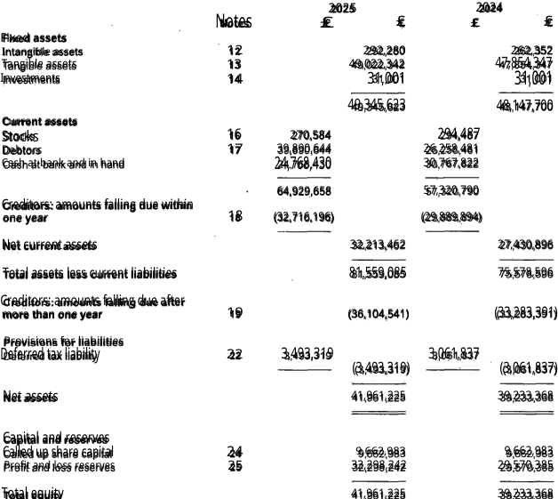
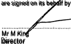

MinerU OCR
Full MinerU OCR pipeline · Full document
HIPPODROME CASINO LIMITED
STATEMENT OF FINANCIAL POSITIONAS AT 31 DECEMBER 2025
| |
| Notes | 2025 £ | £ | £ | 2024 £ |
| Fixed assets | | | | | 262,352 |
| Intangible assets | 12 | | 292,280 49,022,342 | | 47,854,347 |
| Tangible assets Investments | 13 14 | | 31,001 | | 31,001 |
| | | 49,345,623 | | 48,147,700 |
| Current assets Stocks | 16 | 270,584 | | 294,487 | |
| Debtors | 17 | 39,890,644 | | 26,258,481 | |
| Cash at bank and in hand | | 24,768,430 | | 30,767,822 | |
| | 64,929,658 | | 57,320,790 | |
| Creditórs: amounts falling due within | | | | | |
| one year | 18 | (32,716,196) | | (29,889,894) | |
| Net current assets | | | 32,213,462 | | 27,430,896 |
| Total assets less current liabilities | | | 81,559,085 | | 75,578,596 |
| Creditors: amounts falling due after | | | | | |
| more than one year | 19 | | (36,104,541) | | (33,283,391) |
| Provisions for liabilities Deferred tax liability | 22 | 3,493,319 | | 3,061,837 | |
| | | (3,493,319) | | (3,061,837) |
| Net assets | | | 41,961,225 | | 39,233,368 |
| | | | | |
| Capital and resérves | | | | | |
| Called up share capital | 24 | | 9,662,983 | | 9,662,983 |
| Profit and loss reserves | 25 | | 32,298,242 | | 29,570,385 |
| | | | | |
| Total equity | | | 41,961,225 | | 39,233,368 |
The financial statements were approved by the board of directors and authorised for issue on .12/6/2o2.. and are signed on its behalf by:
Mr M King
Director
Company registration number 05497987
19
Exact page Markdown
## HIPPODROME CASINO LIMITED
## STATEMENT OF FINANCIAL POSITIONAS AT 31 DECEMBER 2025
<table><tr><td colspan="3"></td><td colspan="3"></td></tr><tr><td></td><td>Notes</td><td>2025 £</td><td>£</td><td>£</td><td>2024 £</td></tr><tr><td>Fixed assets</td><td></td><td></td><td></td><td></td><td>262,352</td></tr><tr><td>Intangible assets</td><td>12</td><td></td><td>292,280 49,022,342</td><td></td><td>47,854,347</td></tr><tr><td>Tangible assets Investments</td><td>13 14</td><td></td><td>31,001</td><td></td><td>31,001</td></tr><tr><td></td><td></td><td></td><td>49,345,623</td><td></td><td>48,147,700</td></tr><tr><td>Current assets Stocks</td><td>16</td><td>270,584</td><td></td><td>294,487</td><td></td></tr><tr><td>Debtors</td><td>17</td><td>39,890,644</td><td></td><td>26,258,481</td><td></td></tr><tr><td>Cash at bank and in hand</td><td></td><td>24,768,430</td><td></td><td>30,767,822</td><td></td></tr><tr><td></td><td></td><td>64,929,658</td><td></td><td>57,320,790</td><td></td></tr><tr><td>Creditórs: amounts falling due within</td><td></td><td></td><td></td><td></td><td></td></tr><tr><td>one year</td><td>18</td><td>(32,716,196)</td><td></td><td>(29,889,894)</td><td></td></tr><tr><td>Net current assets</td><td></td><td></td><td>32,213,462</td><td></td><td>27,430,896</td></tr><tr><td>Total assets less current liabilities</td><td></td><td></td><td>81,559,085</td><td></td><td>75,578,596</td></tr><tr><td>Creditors: amounts falling due after</td><td></td><td></td><td></td><td></td><td></td></tr><tr><td>more than one year</td><td>19</td><td></td><td>(36,104,541)</td><td></td><td>(33,283,391)</td></tr><tr><td>Provisions for liabilities Deferred tax liability</td><td>22</td><td>3,493,319</td><td></td><td>3,061,837</td><td></td></tr><tr><td></td><td></td><td></td><td>(3,493,319)</td><td></td><td>(3,061,837)</td></tr><tr><td>Net assets</td><td></td><td></td><td>41,961,225</td><td></td><td>39,233,368</td></tr><tr><td></td><td></td><td></td><td></td><td></td><td></td></tr><tr><td>Capital and resérves</td><td></td><td></td><td></td><td></td><td></td></tr><tr><td>Called up share capital</td><td>24</td><td></td><td>9,662,983</td><td></td><td>9,662,983</td></tr><tr><td>Profit and loss reserves</td><td>25</td><td></td><td>32,298,242</td><td></td><td>29,570,385</td></tr><tr><td></td><td></td><td></td><td></td><td></td><td></td></tr><tr><td>Total equity</td><td></td><td></td><td>41,961,225</td><td></td><td>39,233,368</td></tr></table>
The financial statements were approved by the board of directors and authorised for issue on .12/6/2o2.. and are signed on its behalf by:
Mr M King
Director
Company registration number 05497987
19
MinerU VLM
Full MinerU VLM pipeline · Full document
HIPPODROME CASINO LIMITED
STATEMENT OF FINANCIAL POSITION
AS AT 31 DECEMBER 2025
| Notes | 2025 | 2024 |
| £ | £ | £ | £ |
| Fixed assets |
| Intangible assets | 12 | | 292,280 | | 262,352 |
| Tangible assets | 13 | | 49,022,342 | | 47,854,347 |
| Investments | 14 | | 31,001 | | 31,001 |
| | | 49,345,623 | | 48,147,700 |
| Current assets |
| Stocks | 16 | 270,584 | | 294,487 | |
| Debtors | 17 | 39,890,644 | | 26,258,481 | |
| Cash at bank and in hand | | 24,768,430 | | 30,767,822 | |
| | 64,929,658 | | 57,320,790 | |
| Creditors: amounts falling due within one year | 18 | (32,716,196) | | (29,889,894) | |
| Net current assets | | | 32,213,462 | | 27,430,896 |
| Total assets less current liabilities | | | 81,559,085 | | 75,578,596 |
| Creditors: amounts falling due after more than one year | 19 | | (36,104,541) | | (33,283,391) |
| Provisions for liabilities |
| Deferred tax liability | 22 | 3,493,319 | | 3,061,837 | |
| | | (3,493,319) | | (3,061,837) |
| Net assets | | | 41,961,225 | | 39,233,368 |
| Capital and reserves |
| Called up share capital | 24 | | 9,662,983 | | 9,662,983 |
| Profit and loss reserves | 25 | | 32,298,242 | | 29,570,385 |
| Total equity | | | 41,961,225 | | 39,233,368 |
The financial statements were approved by the board of directors and authorised for issue on 12/06/2026 and are signed on its behalf by:
Mr M King
Director
Company registration number 05497987
-19-
Exact page Markdown
# HIPPODROME CASINO LIMITED
# STATEMENT OF FINANCIAL POSITION
# AS AT 31 DECEMBER 2025
<table><tr><td rowspan="2"></td><td rowspan="2">Notes</td><td colspan="2">2025</td><td colspan="2">2024</td></tr><tr><td>£</td><td>£</td><td>£</td><td>£</td></tr><tr><td colspan="6">Fixed assets</td></tr><tr><td>Intangible assets</td><td>12</td><td></td><td>292,280</td><td></td><td>262,352</td></tr><tr><td>Tangible assets</td><td>13</td><td></td><td>49,022,342</td><td></td><td>47,854,347</td></tr><tr><td>Investments</td><td>14</td><td></td><td>31,001</td><td></td><td>31,001</td></tr><tr><td></td><td></td><td></td><td>49,345,623</td><td></td><td>48,147,700</td></tr><tr><td colspan="6">Current assets</td></tr><tr><td>Stocks</td><td>16</td><td>270,584</td><td></td><td>294,487</td><td></td></tr><tr><td>Debtors</td><td>17</td><td>39,890,644</td><td></td><td>26,258,481</td><td></td></tr><tr><td>Cash at bank and in hand</td><td></td><td>24,768,430</td><td></td><td>30,767,822</td><td></td></tr><tr><td></td><td></td><td>64,929,658</td><td></td><td>57,320,790</td><td></td></tr><tr><td>Creditors: amounts falling due within one year</td><td>18</td><td>(32,716,196)</td><td></td><td>(29,889,894)</td><td></td></tr><tr><td>Net current assets</td><td></td><td></td><td>32,213,462</td><td></td><td>27,430,896</td></tr><tr><td>Total assets less current liabilities</td><td></td><td></td><td>81,559,085</td><td></td><td>75,578,596</td></tr><tr><td>Creditors: amounts falling due after more than one year</td><td>19</td><td></td><td>(36,104,541)</td><td></td><td>(33,283,391)</td></tr><tr><td colspan="6">Provisions for liabilities</td></tr><tr><td>Deferred tax liability</td><td>22</td><td>3,493,319</td><td></td><td>3,061,837</td><td></td></tr><tr><td></td><td></td><td></td><td>(3,493,319)</td><td></td><td>(3,061,837)</td></tr><tr><td>Net assets</td><td></td><td></td><td>41,961,225</td><td></td><td>39,233,368</td></tr><tr><td colspan="6">Capital and reserves</td></tr><tr><td>Called up share capital</td><td>24</td><td></td><td>9,662,983</td><td></td><td>9,662,983</td></tr><tr><td>Profit and loss reserves</td><td>25</td><td></td><td>32,298,242</td><td></td><td>29,570,385</td></tr><tr><td>Total equity</td><td></td><td></td><td>41,961,225</td><td></td><td>39,233,368</td></tr></table>
The financial statements were approved by the board of directors and authorised for issue on 12/06/2026 and are signed on its behalf by:
Mr M King
Director
Company registration number 05497987
-19-
PyMuPDF4LLM + Tesseract
Tesseract callback invoked · Full document
Company registration number 05497987
HIPPODROME CASINO LIMITED
STATEMENT OF FINANCIAL POSITION
AS AT 31 DECEMBER 2025
| | | 2025 | | 2024 |
|---|
| . | Notes | £ | £ | £ | £ |
| Fixed assets | | | | | |
| Intangible assets | 12 | | 292,280 | | 262,352 |
| Tangible assets | 13 | | 49,022,342 | | 47,854,347 |
| Investments | 14 | | 31,001 | | 31,001 |
| | | 49,345,623 | | 48,147,700 . |
| Current assets | | | | | |
| Stocks | 16 | 270,584 | | 294,487 | |
| Debtors | 17 | 39,890,644 | | 26,258,481 | |
| Cash at bank and in hand | | 24,768,430 | | 30,767,822 | |
| . | 64,929,658 | | 57,320,790 | |
Creditors: amounts falling due within
one year | 18 | (32,716,196) | | (29,889,894) | |
| Net current assets | . | | 32,213,462 | | 27,430,896 |
| Total assets less current liabilities | | . | 81,559,085 | | 75,578,596 |
Creditors: amounts falling due after
more than one year | 19 | | (36,104,541) | | (33,283,391) |
| Provisions for liabilities | | | | | |
| Deferred tax liability | 22 | 3,493,319
—_——- | (3,493,319) | 3,061,837
———-—- | _
(3,061 837) |
| Net assets | | | 41,961,225 | | 39,233,368 |
| Capital and reserves | | | | | |
| Called up share capital | 24 | | 9,662,983 | | 9,662,983 |
| Profit and loss reserves | 25 | | 32,298 242 | | 29,570,385 |
| Total equity | | | 41,961,225 | | 39,233,368 |
The financial statemenis were approved by the board of directors and authorised for issué on 12 (06/2026. and are signed on its bepalf by:
Mr M Kit Director
-19-
Exact page Markdown
###### Company registration number 05497987
#### HIPPODROME CASINO LIMITED
##### STATEMENT OF FINANCIAL POSITION
#### AS AT 31 DECEMBER 2025
<table><tr><th></th><th></th><th></th><th>2025</th><th></th><th>2024</th></tr><tr><td>.</td><td>Notes</td><td>£</td><td>£</td><td>£</td><td>£</td></tr><tr><td>Fixed assets</td><td></td><td></td><td></td><td></td><td></td></tr><tr><td>Intangible assets</td><td>12</td><td></td><td>292,280</td><td></td><td>262,352</td></tr><tr><td>Tangible assets</td><td>13</td><td></td><td>49,022,342</td><td></td><td>47,854,347</td></tr><tr><td>Investments</td><td>14</td><td></td><td>31,001</td><td></td><td>31,001</td></tr><tr><td></td><td></td><td></td><td>49,345,623</td><td></td><td>48,147,700 .</td></tr><tr><td>Current assets</td><td></td><td></td><td></td><td></td><td></td></tr><tr><td>Stocks</td><td>16</td><td>270,584</td><td></td><td>294,487</td><td></td></tr><tr><td>Debtors</td><td>17</td><td>39,890,644</td><td></td><td>26,258,481</td><td></td></tr><tr><td>Cash at bank and in hand</td><td></td><td>24,768,430</td><td></td><td>30,767,822</td><td></td></tr><tr><td></td><td>.</td><td>64,929,658</td><td></td><td>57,320,790</td><td></td></tr><tr><td>Creditors: amounts falling due within<br/>one year</td><td>18</td><td>(32,716,196)</td><td></td><td>(29,889,894)</td><td></td></tr><tr><td>Net current assets</td><td>.</td><td></td><td>32,213,462</td><td></td><td>27,430,896</td></tr><tr><td>Total assets less current liabilities</td><td></td><td>.</td><td>81,559,085</td><td></td><td>75,578,596</td></tr><tr><td>Creditors: amounts falling due after<br/>more than one year</td><td>19</td><td></td><td>(36,104,541)</td><td></td><td>(33,283,391)</td></tr><tr><td>Provisions for liabilities</td><td></td><td></td><td></td><td></td><td></td></tr><tr><td>Deferred tax liability</td><td>22</td><td>3,493,319<br/>—_——-</td><td>(3,493,319)</td><td>3,061,837<br/>———-—-</td><td>_<br/>(3,061 837)</td></tr><tr><td>Net assets</td><td></td><td></td><td>41,961,225</td><td></td><td>39,233,368</td></tr><tr><td>Capital and reserves</td><td></td><td></td><td></td><td></td><td></td></tr><tr><td>Called up share capital</td><td>24</td><td></td><td>9,662,983</td><td></td><td>9,662,983</td></tr><tr><td>Profit and loss reserves</td><td>25</td><td></td><td>32,298 242</td><td></td><td>29,570,385</td></tr><tr><td>Total equity</td><td></td><td></td><td>41,961,225</td><td></td><td>39,233,368</td></tr></table>
The financial statemenis were approved by the board of directors and authorised for issué on 12 (06/2026. and are signed on its bepalf by:
Mr M Kit Director
-19-
PyMuPDF4LLM + VLM
VLM OCR used · Full document
Company registration number 05497987
HIPPODROME CASINO LIMITED
STATEMENT OF FINANCIAL POSITION
AS AT 31 DECEMBER 2025

2025 2024
Notes £ £ £ £
Fixed assets
Intangible assets 12 292,280 262,352
Tangible assets 13 49,022,342 47,854,347
Investments 14 31,001 31,001
49,345,623 48,147,700
Current assets
Stocks 16 270,584 294,487
Debtors 17 39,890,644 26,258,481
Cash at bank and in hand 24,768,430 30,767,822
64,929,658 57,320,790
Creditors: amounts falling due within
one year 18 (32,716,196) (29,889,894)
Net current assets 32,213,462 27,430,896
Total assets less current liabilities 81,559,085 75,578,596
Creditors: amounts falling due after
more than one year 19 (36,104,541) (33,283,391)
Provisions for liabilities
Deferred tax liability 22 3,493,319 3,061,837
(3,493,319) (3,061,837)
Net assets 41,961,225 39,233,368
Capital and reserves
Called up share capital 24 9,662,983 9,662,983
Profit and loss reserves 25 32,298,242 29,570,385
Total equity 41,961,225 39,233,368
Total equity

are signed on its behalf by
Mr M King
Director
-19-
Exact page Markdown
### Company registration number 05497987
# HIPPODROME CASINO LIMITED
## STATEMENT OF FINANCIAL POSITION
## AS AT 31 DECEMBER 2025

<!-- Start of picture text -->
2025 2024<br>Notes £ £ £ £<br>Fixed assets<br>Intangible assets 12 292,280 262,352<br>Tangible assets 13 49,022,342 47,854,347<br>Investments 14 31,001 31,001<br>49,345,623 48,147,700<br>Current assets<br>Stocks 16 270,584 294,487<br>Debtors 17 39,890,644 26,258,481<br>Cash at bank and in hand 24,768,430 30,767,822<br>64,929,658 57,320,790<br>Creditors: amounts falling due within<br>one year 18 (32,716,196) (29,889,894)<br>Net current assets 32,213,462 27,430,896<br>Total assets less current liabilities 81,559,085 75,578,596<br>Creditors: amounts falling due after<br>more than one year 19 (36,104,541) (33,283,391)<br>Provisions for liabilities<br>Deferred tax liability 22 3,493,319 3,061,837<br>(3,493,319) (3,061,837)<br>Net assets 41,961,225 39,233,368<br>Capital and reserves<br>Called up share capital 24 9,662,983 9,662,983<br>Profit and loss reserves 25 32,298,242 29,570,385<br>Total equity 41,961,225 39,233,368<br><!-- End of picture text -->
Total equity

<!-- Start of picture text -->
are signed on its behalf by<br>Mr M King<br>Director<br><!-- End of picture text -->
-19-